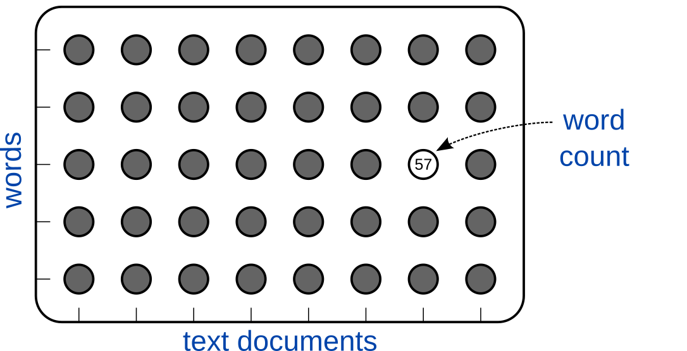

class: middle, title-slide count: false .center[ # Non-negative Matrix Factorization <br/><br/> .bold[Simon Leglaive] <br/><br/> .tiny[Artificial Intelligence and Deep Learning course <br/> CentraleSupélec] ] .footnote[ This lecture is adapted from the following presentations: - Cédric Févotte, [Nonnegative matrix factorisation and friends for audio signal separation](https://www.irit.fr/~Cedric.Fevotte/talks/spars2017.pdf), SPARS summer school, Lisbon, 2017. - Slim Essid and Alexey Ozerov, [A tutorial on nonnegative matrix factorization with applications to audiovisual content analysis](https://perso.telecom-paristech.fr/essid/teach/NMF_tutorial_ICME-2014.pdf), 2014. ] --- class: middle # Today - Introduction and applications of NMF - Algorithms for NMF - Activity 1 (Jupyter notebook) - NMF for audio signal unmixing - Activity 2 (Jupyter notebook) --- count: false class: center, middle # Introduction, notations and applications --- class: middle Data often come in matrix form. .center[<img src="./images/matrix_features_samples.png" style="width: 700px;" />] .credit[Slide credit: Cédric Févotte, [Nonnegative matrix factorisation and friends for audio signal separation](https://www.irit.fr/~Cedric.Fevotte/talks/spars2017.pdf), SPARS summer school, Lisbon, 2017.] --- class: middle Data often come in matrix form. .center[] .credit[Slide credit: Cédric Févotte, [Nonnegative matrix factorisation and friends for audio signal separation](https://www.irit.fr/~Cedric.Fevotte/talks/spars2017.pdf), SPARS summer school, Lisbon, 2017.] --- class: middle Data often come in matrix form. .center[] .credit[Slide credit: Cédric Févotte, [Nonnegative matrix factorisation and friends for audio signal separation](https://www.irit.fr/~Cedric.Fevotte/talks/spars2017.pdf), SPARS summer school, Lisbon, 2017.] --- class: middle Data often come in matrix form. .center[] .credit[Slide credit: Cédric Févotte, [Nonnegative matrix factorisation and friends for audio signal separation](https://www.irit.fr/~Cedric.Fevotte/talks/spars2017.pdf), SPARS summer school, Lisbon, 2017.] --- ## Low-rank matrix factorization .center[] .credit[Image credit: Cédric Févotte, [Nonnegative matrix factorisation and friends for audio signal separation](https://www.irit.fr/~Cedric.Fevotte/talks/spars2017.pdf), SPARS summer school, Lisbon, 2017.] - Data matrix: $\mathbf{V} = [\mathbf{v}\_1, ..., \mathbf{v}\_N] \in \mathbb{R}^{F \times N}$ - Dictionary matrix: $\mathbf{W} = [\mathbf{w}\_1, ..., \mathbf{w}\_K] \in \mathbb{R}^{F \times K}$ - Activation matrix: $\mathbf{H} = [\mathbf{h}\_1, ..., \mathbf{h}\_N] \in \mathbb{R}^{K \times N}$ - Factorization rank chosen such that $K(F + N) \ll FN$. --- ## Low-rank matrix factorization .center[] .credit[Image credit: Cédric Févotte, [Nonnegative matrix factorisation and friends for audio signal separation](https://www.irit.fr/~Cedric.Fevotte/talks/spars2017.pdf), SPARS summer school, Lisbon, 2017.] $$ \mathbf{v}\_n \approx \hat{\mathbf{v}}\_n := \mathbf{W} \mathbf{h}\_n = \sum\_{k=1}^K \mathbf{w}\_{k} h\_{kn}, \qquad \mathbf{h}\_n = [h\_{1n}, ..., h\_{Kn}]^\top. $$ The column $\mathbf{v}\_n \in \mathbb{R}^F$ of the data matrix is approximated by a .bold[linear combination] of $K$ templates/atoms $\\{\mathbf{w}\_{k} \in \mathbb{R}^F\\}\_{k=1}^K$, determined by the $K$ activation coefficients $\\{ h\_{kn} \in \mathbb{R} \\}\_{k=1}^K$. --- ## Low-rank matrix factorization .center[] .credit[Image credit: Cédric Févotte, [Nonnegative matrix factorisation and friends for audio signal separation](https://www.irit.fr/~Cedric.Fevotte/talks/spars2017.pdf), SPARS summer school, Lisbon, 2017.] $$ \mathbf{v}\_n \approx \hat{\mathbf{v}}\_n := \mathbf{W} \mathbf{h}\_n = \sum\_{k=1}^K \mathbf{w}\_{k} h\_{kn}, \qquad \mathbf{h}\_n = [h\_{1n}, ..., h\_{Kn}]^\top. $$ The column $\mathbf{v}\_n \in \mathbb{R}^F$ of the data matrix is approximated by a .bold[linear combination] of $K$ templates/atoms $\\{\mathbf{w}\_{k} \in \mathbb{R}^F\\}\_{k=1}^K$, determined by the $K$ activation coefficients $\\{ h\_{kn} \in \mathbb{R} \\}\_{k=1}^K$. <!-- --- ## Low-rank matrix factorization ### Notations .center[] For all $(f,n) \in \\{1,...,F\\} \times \\{1,...,N\\}$: $$ (\mathbf{V})\_{fn} \approx (\hat{\mathbf{V}})\_{fn} = (\mathbf{W} \mathbf{H})\_{fn} = \sum\_{k=1}^K w\_{fk} h\_{kn} $$ .credit[Image credit: Adapted from Cédric Févotte, [Nonnegative matrix factorisation and friends for audio signal separation](https://www.irit.fr/~Cedric.Fevotte/talks/spars2017.pdf), SPARS summer school, Lisbon, 2017.] --> --- ## Principal component analysis (PCA) - Let's assume that the data are centered: $\mathbb{E}[\mathbf{v}\_n] = 0$. - PCA is equivalent to matrix factorization under the following contraints: - the dictionary matrix $\mathbf{W}$ is semi-orthogonal: $\mathbf{W}^\top \mathbf{W} = \mathbf{I}$. - the activation matrix is defined by $\mathbf{H} = \mathbf{W}^\top \mathbf{V}$. We thus have $ \mathbf{v}\_n \approx \hat{\mathbf{v}}\_n = \mathbf{W} \mathbf{h}\_n = \mathbf{W} \mathbf{W}^\top \mathbf{v}\_n$. - The dictionary matrix is estimated in the least-square sense: $$ \underset{\mathbf{W} \in \mathbb{R}^{F \times K}}{\min} \frac{1}{N} \sum\_{n=1}^N \parallel \mathbf{v}\_n - \mathbf{W} \mathbf{W}^\top \mathbf{v}\_n \parallel\_2^2, \qquad s.t. \qquad \mathbf{W}^\top \mathbf{W} = \mathbf{I}.$$ - The solution is given by computing the eigenvalue decomposition of the empirical covariance matrix $\hat{\mathbf{R}}\_{\mathbf{v}\mathbf{v}} := \frac{1}{N} \sum\_{n=1}^N \mathbf{v}\_n \mathbf{v}\_n^\top$ and by taking $\mathbf{W}$ as the matrix built from the $K$ dominant eigenvectors (i.e. associated with the $K$ largest eigenvalues). --- ## Principal component analysis (PCA) ### Application on face images A face is represented as a linear combination of basis images called .bold[eigenfaces]. .center[] PCA allows for constructive and destructive combinations of basis images. .credit[Image credit: D. D. Lee and H. S. Seung, [Learning the parts of objects by non-negative matrix factorization](https://www.nature.com/articles/44565.pdf?origin=ppub), 1999] --- ## Non-negative matrix factorization (NMF) .center[] - Examples of non-negative data: pixel intensities, amplitude Fourier spectra, fluorescent spectra, occurence counts, user scores. - Non-negativity constraints: $\mathbf{V} \in \mathbb{R}\_{\color{brown}+}^{F \times N}$, $\mathbf{W} \in \mathbb{R}\_{\color{brown}+}^{F \times K}$ and $\mathbf{H} \in \mathbb{R}\_{\color{brown}+}^{K \times N}$. - We will also use the notation $\mathbf{V} \ge 0$, $\mathbf{W} \ge 0$ and $\mathbf{H} \ge 0$, which should not be confused with positive semi-definiteness. .citation[D. D. Lee and H. S. Seung, [Learning the parts of objects by non-negative matrix factorization](https://www.nature.com/articles/44565.pdf?origin=ppub), 1999] --- ## Non-negative matrix factorization (NMF) ### Application on face images A face is represented as a linear combination of .bold[non-negative] basis images. .center[] NMF only allows for constructive combinations of basis images. It leads to intuitive notions of parts of faces in the dictionary matrix (mouth, nose, eyes, chin, etc.). .credit[Image credit: D. D. Lee and H. S. Seung, [Learning the parts of objects by non-negative matrix factorization](https://www.nature.com/articles/44565.pdf?origin=ppub), 1999] --- exclude: true ## NMF for feature learning in face recognition .bold[Training stage] - $\mathbf{V}\_{tr} \in \mathbb{R}\_{\color{brown}+}^{F \times N}$ is a dataset of $N$ face images composed of $F$ pixels. - We estimate $\mathbf{W}\_{tr} \in \mathbb{R}\_{\color{brown}+}^{F \times K}$ and $\mathbf{H}\_{tr} \in \mathbb{R}\_{\color{brown}+}^{K \times N}$ such that $\mathbf{V}\_{tr} \approx \mathbf{W}\_{tr} \mathbf{H}\_{tr}$. - We train a classifier for face recognition using $\mathbf{H}\_{tr}$ as features. Each column of the activation matrix is a $K$-dimensional feature vector characterizing the $n$-th image in the dataset. .bold[Test stage] - We observe a new image $\mathbf{v}\_n \in \mathbb{R}\_+^F$. - We decompose it over the learned dictionary, i.e. we compute $\mathbf{h}\_n \in \mathbb{R}\_+^K$ such that: $$\mathbf{v}\_n \approx \mathbf{W}\_{tr} \mathbf{h}\_n. $$ - We use $\mathbf{h}\_n$ as a feature vector for classification. --- ## NMF for topics analysis in documents .center[] - $\mathbf{V} \in \mathbb{R}\_{+}^{F \times N}$ is a .bold[document-term] matrix. - Each entry of $\mathbf{V}$ is the occurence count of a word (among a vocabulary of $F$ words) in a document (among $N$ documents in the dataset). - The dictionary matrix contains .bold[topics] and the activation matrix indicates the importance of each topic for each document. .credit[Image credit: Adapted from Cédric Févotte, [Nonnegative matrix factorisation and friends for audio signal separation](https://www.irit.fr/~Cedric.Fevotte/talks/spars2017.pdf), SPARS summer school, Lisbon, 2017.] --- exclude: true ## NMF for topics analysis in documents .center[] .tiny[ - The darkness of the text indicates the frequency of each word for each discovered topic in the dictionary matrix. - The decomposition of the document on the right (eight most frequent words in the encyclopedia entry on the "Constitution of the United States") gives high weight to the upper two topics, and none to the lower two, as shown by the shaded squares in the activation matrix. ] .credit[Image credit: D. D. Lee and H. S. Seung, [Learning the parts of objects by non-negative matrix factorization](https://www.nature.com/articles/44565.pdf?origin=ppub), 1999] --- ## NMF for movie recommendation .center[] - $\mathbf{V} \in \mathbb{R}\_{+}^{F \times N}$ is a .bold[movie rating] matrix. - Each entry of $\mathbf{V}$ is the rating of a movie (among a catalogue of $F$ movies) by a user (among $N$ users in the dataset). - The dictionary matrix contains movie .bold[genres] (action, comedy, etc.) and the activation matrix indicates how much each user likes each genre. - Netflix Prize (2007-2009): $1,000,000 for the first movie recommendation system that would manage to decrease by 10% the error rate (on a private test dataset). .credit[Image credit: Adapted from Cédric Févotte, [Nonnegative matrix factorisation and friends for audio signal separation](https://www.irit.fr/~Cedric.Fevotte/talks/spars2017.pdf), SPARS summer school, Lisbon, 2017.] --- ## NMF for unmixing A rank-$K$ NMF can be written as the sum of $K$ rank-1 matrices: $$ \mathbf{V} \approx \hat{\mathbf{V}} = \sum\_{k=1}^K \hat{\mathbf{V}}\_k, \qquad \hat{\mathbf{V}}\_k = ({\mathbf{W}})\_{:,k} ({\mathbf{H}})\_{k,:} $$ .center[] --- ## NMF for unmixing A rank-$K$ NMF can be written as the sum of $K$ rank-1 matrices: $$ \mathbf{V} \approx \hat{\mathbf{V}} = \sum\_{k=1}^K \hat{\mathbf{V}}\_k, \qquad \hat{\mathbf{V}}\_k = ({\mathbf{W}})\_{:,k} ({\mathbf{H}})\_{k,:} $$ .center[] --- ## Difficulty: rank of the factorization .grid[ .kol-1-2[ .center[] ] .kol-1-2[ - The rank of the factorization $K$ is the number of columns (or rows) in the dictionary (or activation) matrix. - Chosing the rank of the factorization is a difficult problem. It depends on the data and the application. ] ] A suitable choice is very important. There is a trade-off between: - .bold[Fidelity]: A greater rank leads to a better approximation of the data matrix. - .bold[Complexity]: A lower rank leads to a less complex model, with less parameters to estimate (easier to solve). .credit[Slide credit: Inspired from S. Essid and A. Ozerov, [A tutorial on nonnegative matrix factorization with applications to audiovisual content analysis](https://perso.telecom-paristech.fr/essid/teach/NMF_tutorial_ICME-2014.pdf), 2014.] --- ## Difficulty: the solution is not unique - NMF is an .bold[ill-posed problem]: it has an infinie number of solutions. - Let $\hat{\mathbf{V}} = \mathbf{W} \mathbf{H} $ with $\mathbf{W} \ge 0$ and $\mathbf{H} \ge 0$. - Any invertible matrix $\mathbf{Q}$ such that $\tilde{\mathbf{W}} := \mathbf{W}\mathbf{Q} \ge 0$ and $\tilde{\mathbf{H}} := \mathbf{Q}^{-1}\mathbf{H} \ge 0$ provides an alternative factorization with the same reconstruction: $$ \tilde{\mathbf{V}} = \tilde{\mathbf{W}} \tilde{\mathbf{H}} = \mathbf{W}\mathbf{Q} \mathbf{Q}^{-1}\mathbf{H} = \mathbf{W} \mathbf{H} = \hat{\mathbf{V}}. $$ --- exclude: true - In particular, $\mathbf{Q}$ can be any non-negative generalized permutation matrix, e.g. in dimension 3: $$ \mathbf{Q} = \begin{pmatrix} 0 & 0 & 2 \\\\ 0 & 3 & 0 \\\\ 1 & 0 & 0 \end{pmatrix}. $$ This case simply scales and permutes the template vectors in the dictionary matrix. We generally normalize the columns of $\mathbf{W}$ so that they have unit $L\_2$ norm for instance. .credit[Slide credit: Inspired from S. Essid and A. Ozerov, [A tutorial on nonnegative matrix factorization with applications to audiovisual content analysis](https://perso.telecom-paristech.fr/essid/teach/NMF_tutorial_ICME-2014.pdf), 2014.] --- exclude: true ## Geometric interpretation NMF assumes that the data are well described by a polyhedral cone generated by the columns of $\mathbf{W}$. .left-column[ .center[] $$ \mathcal{C}\_{\mathbf{W}} = \left\\{ \sum\_{k=1}^{K} h\_k \mathbf{w}\_k, (h\_1, ..., h\_K) \in \mathbb{R}\_+^K \right\\} $$ ] .right-column[ .center[] .bold[Problem]: Multiple cones can lead to the same reconstruction of the data. ] .credit[Slide credit: Inspired from S. Essid and A. Ozerov, [A tutorial on nonnegative matrix factorization with applications to audiovisual content analysis](https://perso.telecom-paristech.fr/essid/teach/NMF_tutorial_ICME-2014.pdf), 2014.] --- count: false class: center, middle # Algorithms for NMF --- ## NMF as a constrained optimization problem - Given a data matrix $\mathbf{V} \in \mathbb{R}\_{+}^{F \times N}$, we need to estimate the model parameters $\mathbf{W} \in \mathbb{R}\_{+}^{F \times K}$ and $\mathbf{H} \in \mathbb{R}\_{+}^{K \times N}$. - This is achieved by solving a constrained optimization problem: $$ \underset{\mathbf{W} \in \mathbb{R}\_+^{F \times K}, \mathbf{H} \in \mathbb{R}\_{+}^{K \times N}}{\min} D(\mathbf{V} | \mathbf{W} \mathbf{H}),$$ where $D(\cdot | \cdot)$ is a separable measure of fit: $$\begin{aligned} D(\mathbf{V} | \mathbf{W} \mathbf{H}) =& \sum\_{f=1}^{F} \sum\_{n=1}^{N} d\Big((\mathbf{V})\_{fn} | (\mathbf{W} \mathbf{H})\_{fn} \Big) = \sum\_{f=1}^{F} \sum\_{n=1}^{N} d\left( v\_{fn} \Big| \sum\_{k=1}^K w\_{fk} h\_{kn} \right), \end{aligned}$$ and $d(x | y)$ is a scalar divergence defined for all $x, y \ge 0$: - $d(x | y) \ge 0$ for all $x, y \ge 0$; - $d(x | y) = 0$ if and only if $x = y$. --- ## Popular divergences - Squared euclidean distance $$ d\_{EUC}(x | y) = \frac{1}{2}(x-y)^2 $$ - Generalized Kullback-Leibler divergence $$ d\_{KL}(x | y) = x \ln\left( \frac{x}{y} \right) + y -x $$ - Itakura-Saito divergence $$ d\_{IS}(x | y) = \frac{x}{y} - \ln\left( \frac{x}{y} \right) - 1$$ --- exclude: true ## Convexity properties <table> <tr> <th></th> <th>EUC</th> <th>KL</th> <th>IS</th> </tr> <tr> <td>Convex on $x$</td> <td>yes</td> <td>yes</td> <td>yes</td> </tr> <tr> <td>Convex on $y$</td> <td>yes</td> <td>yes</td> <td> <b>no<b/></td> </tr> </table> .center[] .credit[Image credit: Cédric Févotte, [Nonnegative matrix factorisation and friends for audio signal separation](https://www.irit.fr/~Cedric.Fevotte/talks/spars2017.pdf), SPARS summer school, Lisbon, 2017.] --- exclude: true ## The $\beta$-divergence Parametric family of divergences: $$ d\_{\beta}(x,y) = \begin{cases} \frac{1}{\beta(\beta - 1)} (x^\beta + (\beta - 1)y^\beta - \beta\, x\, y^{\beta - 1}) & \beta \in \mathbb{R}\setminus\\{0,1\\} \\\\ \frac{x}{y} - \ln\left( \frac{x}{y} \right) - 1 & \beta = 0 \\\\ x \ln\left( \frac{x}{y} \right) + y - x & \beta = 1 \end{cases}$$ Special cases: - squared Euclidean distance for $\beta = 2$ - generalized Kullback-Leibler for $\beta = 1$ - Itakura-Saito divergence for $\beta = 0$ .credit[Slide credit: Cédric Févotte, [Nonnegative matrix factorisation and friends for audio signal separation](https://www.irit.fr/~Cedric.Fevotte/talks/spars2017.pdf), SPARS summer school, Lisbon, 2017.] --- exclude: true ## The $\beta$-divergence .center[] .credit[Slide credit: Cédric Févotte, [Nonnegative matrix factorisation and friends for audio signal separation](https://www.irit.fr/~Cedric.Fevotte/talks/spars2017.pdf), SPARS summer school, Lisbon, 2017.] <!----- ## Exercises 1. Compute the first and second derivatives of $d\_{\beta}(x,y)$ with respect to (w.r.t) $y$. 2. Show that $d\_{\beta}(x,y)$ has a single minimum in $y = x$. 3. Show that $d\_{\beta}(x,y)$ is convex w.r.t $y$ for $1 \le \beta \le 2$. 4. Show that $d\_{\beta}(\lambda x, \lambda y) = \lambda^\beta d\_{\beta}(x,y)$. See C. Févotte and J. Idier, [Algorithms for nonnegative matrix factorization with the beta-divergence](https://hal.archives-ouvertes.fr/file/index/docid/526044/filename/beta_nmf_hal.pdf), 2010--> --- ## NMF algorithm $$ \underset{\mathbf{W} \in \mathbb{R}\_+^{F \times K}, \mathbf{H} \in \mathbb{R}\_{+}^{K \times N}}{\min} D(\mathbf{V} | \mathbf{W} \mathbf{H})$$ - This optimization problem is in general .bold[not jointly convex] in $\mathbf{W}$ and $\mathbf{H}$. - The cost function admits multiple local minima. - It may be individually convex in $\mathbf{W}$ or $\mathbf{H}$ if a proper divergence is chosen. - We resort to a .bold[block-coordinate] approach, alternating the optimization w.r.t $\mathbf{W}$ with $\mathbf{H}$ fixed, and w.r.t $\mathbf{H}$ with $\mathbf{W}$ fixed. - The resulting iterative algorithm is sensitive to the initialization. --- ## NMF algorithm - Updates of $\mathbf{W}$ and $\mathbf{H}$ are equivalent by transposition: $$ \mathbf{V} \approx \mathbf{W} \mathbf{H} \Leftrightarrow \mathbf{V}^\top \approx \mathbf{H}^\top \mathbf{W}^\top $$ - The objective function is separable in the columns of $\mathbf{H}$ (or the rows of $\mathbf{W}$): $$D(\mathbf{V} | \mathbf{W} \mathbf{H}) = \sum\_{n=1}^{N} D(\mathbf{v}\_{n} | \mathbf{W} \mathbf{h}\_{n} ) $$ - We end up with a .bold[non-negative linear regression] problem: $$ \underset{\mathbf{h} \in \mathbb{R}\_+^K}{\min} \left\\{ C(\mathbf{h}) := D(\mathbf{v} | \mathbf{W} \mathbf{h}) \right\\}.$$ - We can solve this optimization problem using a majorize-minimization (MM) algorithm. --- count: false class: middle, center ## Majorization-minimization (MM) --- ### Auxiliary function **.bold[Definition]** - The $\mathbb{R}\_+^K \times \mathbb{R}\_+^K \mapsto \mathbb{R}\_+$ mapping $G(\mathbf{h} | \tilde{\mathbf{h}})$ is an .bold[auxiliary function] to $C(\mathbf{h})$ if and only if: $$ \forall \mathbf{h} \in \mathbb{R}\_+^K,\hspace{.15cm} C(\mathbf{h}) = G(\mathbf{h} | \mathbf{h}) \qquad \text{and} \qquad \forall (\mathbf{h}, \tilde{\mathbf{h}}) \in \mathbb{R}\_+^K \times \mathbb{R}\_+^K,\hspace{.15cm} C(\mathbf{h}) \le G(\mathbf{h} | \tilde{\mathbf{h}}). $$ In other words an auxiliary function $G(\mathbf{h} | \tilde{\mathbf{h}})$ is a .bold[majorizing function] or .bold[upper bound] of $C(\mathbf{h})$ which is tight for $\mathbf{h} = \tilde{\mathbf{h}}$. -- **.bold[MM algorithm]** - The optimization of $C(\mathbf{h})$ can be replaced by an .bold[iterative optimization] of $G(\mathbf{h} | \tilde{\mathbf{h}})$: 1. Initialize $\mathbf{h}^{(0)}$ 2. Iterate $ \mathbf{h}^{(i+1)} = \underset{\mathbf{h} \in \mathbb{R}\_+^K}{\arg\min} \hspace{.25cm} G(\mathbf{h} | \mathbf{h}^{(i)}). $ -- We can show that under this update the cost function $C(\mathbf{h})$ is monotonically decreasing (cf. appendix): $$C(\mathbf{h}^{(i+1)}) \le C(\mathbf{h}^{(i)}).$$ --- ## Majorization-minimization .center[] .credit[Slide credit: Cédric Févotte, [Nonnegative matrix factorisation and friends for audio signal separation](https://www.irit.fr/~Cedric.Fevotte/talks/spars2017.pdf), SPARS summer school, Lisbon, 2017.] --- ## Majorization-minimization .center[] .credit[Slide credit: Cédric Févotte, [Nonnegative matrix factorisation and friends for audio signal separation](https://www.irit.fr/~Cedric.Fevotte/talks/spars2017.pdf), SPARS summer school, Lisbon, 2017.] --- ## Majorization-minimization .center[] .credit[Slide credit: Cédric Févotte, [Nonnegative matrix factorisation and friends for audio signal separation](https://www.irit.fr/~Cedric.Fevotte/talks/spars2017.pdf), SPARS summer school, Lisbon, 2017.] --- ## Majorization-minimization .center[] .credit[Slide credit: Cédric Févotte, [Nonnegative matrix factorisation and friends for audio signal separation](https://www.irit.fr/~Cedric.Fevotte/talks/spars2017.pdf), SPARS summer school, Lisbon, 2017.] --- ## Majorization-minimization .center[] .credit[Slide credit: Cédric Févotte, [Nonnegative matrix factorisation and friends for audio signal separation](https://www.irit.fr/~Cedric.Fevotte/talks/spars2017.pdf), SPARS summer school, Lisbon, 2017.] --- class: center, middle ## The example of IS-NMF --- class: middle .bold[Non-negative linear regression] problem: $$ \underset{\mathbf{h}\_n \in \mathbb{R}\_+^K}{\min} \left\\{ C(\mathbf{h}\_n) := D\_{IS}(\mathbf{v}\_{n} | \mathbf{W} \mathbf{h}\_{n} ) = \sum\_{f=1}^F d\_{IS} \left( v\_{fn} | \sum\_{k=1}^K w\_{fk} h\_{kn} \right) \right\\}.$$ where we recall that $ d\_{IS}(x | y) = \frac{x}{y} - \ln\left( \frac{x}{y} \right) - 1$, We can solve this optimization problem with an MM algorithm: 1. Define an auxiliary function. 2. Minimize the auxiliary function iteratively. --- class: middle, center Due to time constraints, we will not see the calculus details 😞. But they are in the appendix slides 🥳. --- class: middle, Using an MM algorithm, we obtain the following **multiplicative update rules**: $$ \mathbf{H} \leftarrow \mathbf{H} \odot \left[ \frac{\mathbf{W}^\top \left[\left( \mathbf{W}\mathbf{H}\right)^{\odot - 2} \odot \mathbf{V} \right] }{\mathbf{W}^\top \left( \mathbf{W}\mathbf{H}\right)^{\odot - 1}} \right]^{\odot 1/2}; \qquad \mathbf{W} \leftarrow \mathbf{W} \odot \left[ \frac{\left[\left( \mathbf{W}\mathbf{H}\right)^{\odot - 2} \odot \mathbf{V} \right] \mathbf{H}^\top }{\left( \mathbf{W}\mathbf{H}\right)^{\odot - 1} \mathbf{H}^\top } \right]^{\odot 1/2}, $$ where $\odot$ denotes element-wise operations, and matrix division is also element-wise. .credit[C. Févotte and J. Idier, [Algorithms for nonnegative matrix factorization with the beta-divergence](https://hal.archives-ouvertes.fr/file/index/docid/526044/filename/beta_nmf_hal.pdf), Neural computation, 2010] --- count: false class: center, middle # Activity #1 ## IS-NMF on a toy example --- count: false class: center, middle # NMF for audio signal unmixing --- ## Spectrogram representation The spectrogram is a 3D representation of an audio signal. .center[] --- class: center, middle .width-100[] --- class: center, middle The spectrogram is computed from the short-time Fourier transform (STFT) of the signal. --- ## Analysis (direct STFT) The STFT is obtained by computing the discrete Fourier transform (DFT) on short overlapping smoothed windows of the signal. .center[] --- exclude: true Let $x(t) \in \mathbb{R}$ be a signal defined in the time domain $t \in \mathbb{Z}$. A .bold[frame] is defined for all $n \in \mathbb{Z}$ by: $$ x\_n(t) = x(t + nH) w\_a(t), $$ - $w\_a(t)$ is a smooth analysis window with support (where it is non-zero) $\\{0,..., L\_w-1\\}$; - $H$ is the analysis hop size (increment) such that $L\_w / H \in \mathbb{N}$; - the overlap between two successive frames is equal to $L\_w - H$. The STFT is defined for all time-frequency points $(f,n) \in \\{0,...,F-1\\} \times \mathbb{Z}$ by the DFT of the frame $x\_n(t)$ whose support is the same as the analysis window $w\_a(t)$: $$ X(f,n) = \frac{1}{\sqrt{L\_w}}\sum\_{t \in \mathbb{Z}} x\_n(t) \exp \left( -\imath 2 \pi \frac{f t}{L\_w} \right).$$ The number of frequency bins is $F = L\_w$. --- class: middle For a real-valued signal, the STFT is generally complex valued: $$ \mathbf{X} \in \mathbb{C}^{F \times N}, $$ where $F$ is the number of frequency bins and $N$ the number of time frames. - the modulus of the STFT $|\mathbf{X}| \in \mathbb{R}_+^{F \times N}$ is called the **magnitude spectrogram**, - the squared modulus $|\mathbf{X}|^{\odot 2} \in \mathbb{R}_+^{F \times N}$ of the STFT is called the **power spectrogram**, - the argument $\arg(\mathbf{X}) \in [0, 2\pi[^{F \times N}$ of the STFT is called the **phase spectrogram**. --- ## Short-term Fourier transform - Synthesis (inverse STFT) The inverse STFT is computed by taking the inverse DFT of the spectra at all time indices and by overlap-add. .center[] --- exclude: true For each frame $n \in \mathbb{Z}$ of the STFT, we first compute the inverse DFT: $$ \hat{x}\_n(t) = \frac{1}{\sqrt{L\_w}}\sum\_{f = 0}^{F-1} X(f,n) \exp \left( +\imath 2 \pi \frac{f t}{L\_w} \right) $$ The inverse STFT is then computed by overlap-add, for all $t \in \mathbb{Z}$: $$ \hat{x}(t) = \sum\_{n \in \mathbb{Z}} w\_s(t-nH) \hat{x}\_n(t - nH) , $$ where $w\_s(t)$ is a smooth synthesis window with the same support as the analysis window $w\_a(t)$. --- exclude: true ## Perfect reconstruction We can show that perfect reconstruction is achieved, i.e. $\hat{x}(t) = x(t)$ for all $t \in \mathbb{Z}$, if $$\sum\_{n \in \mathbb{Z}} w\_a(t - nH) w\_s(t - nH) = 1. $$ This is the case for instance with the sine window defined by: $$ w\_a(t) = w\_s(t) = \begin{cases} \sin\left(\frac{\pi}{L\_w}\left(t + \frac{1}{2}\right)\right) & \text{ if } 0 \le t \le L\_w - 1 \\\\ 0 & \text{ otherwise} \end{cases}, $$ and with $H = L\_w / 2$. --- ## Analyze - transform - synthesize .left-column[ .center[] ] .right-column[ Examples of transformation: - time stretching or pitch shifting with the phase vocoder. .tiny[Warning: the following audio example can hurt your hearing system] .center[<audio style="width: 300px;" controls="controls" preload="none" src="./images/jul_cut.wav"></audio>] - time-frequency masking for source separation (audio unmixing). ] --- ## NMF for audio source separation .center[] - $\mathbf{V} \in \mathbb{R}\_{+}^{F \times N}$ is an .bold[audio spectrogram] matrix. - Each entry of $\mathbf{V}$ is the magnitude or power of the Fourier coeffcient at a given frequency (among $F$ frequencies) and time instant (among $N$ time frames). - The dictionary matrix contains .bold[spectral templates] (e.g. spectra of musical notes) and the activation matrix indicates the activation of these templates over the time frames. - Examples of application: audio source separation, automatic mucic transcription (from the activation matrix). --- class: middle .center[] Once the NMF model parameters are estimated from the mixture spectrogram $\mathbf{V} = |\mathbf{X}|$ (or power spectrogram), we can reconstruct the individual sound components by - building rank-1 spectrogram matrices: $$\hat{\mathbf{V}}\_k = ({\mathbf{W}})\_{:,k} ({\mathbf{H}})\_{k,:}$$ - using the phase of the mixture to create a complex-valued STFT matrix: $$\hat{\mathbf{X}}\_k = \hat{\mathbf{V}}\_k \exp(j \arg(\mathbf{X})) $$ - inverting the STFT to compute the waveform. --- ## Piano toy example .center[] .credit[Credits: Cédric Févotte, [Nonnegative matrix factorisation and friends for audio signal separation](https://www.irit.fr/~Cedric.Fevotte/talks/spars2017.pdf), SPARS summer school, Lisbon, 2017.] --- .center[] .credit[Credits: Cédric Févotte, [Nonnegative matrix factorisation and friends for audio signal separation](https://www.irit.fr/~Cedric.Fevotte/talks/spars2017.pdf), SPARS summer school, Lisbon, 2017.] --- count: false class: center, middle # Activity #2 ## IS-NMF for audio signal unmixing --- count: false class: center, middle # Appendix --- count: false class: middle, center # Majorization-minimization ## Monotonicity of the cost function --- count: false - The update $ \mathbf{h}^{(i+1)} = \underset{\mathbf{h} \in \mathbb{R}\_+^K}{\arg\min} \hspace{.15cm} G(\mathbf{h} | \mathbf{h}^{(i)})$ implies that $G(\mathbf{h}^{(i+1)} | \mathbf{h}^{(i)}) \le G(\mathbf{h}^{(i)} | \mathbf{h}^{(i)})$. - By definition of the auxiliary function: - $ C(\mathbf{h}^{(i+1)}) \le G(\mathbf{h}^{(i+1)} | \mathbf{h}^{(i)}) $ - $ C(\mathbf{h}^{(i)}) = G(\mathbf{h}^{(i)} | \mathbf{h}^{(i)}) $ - Putting all together we have: $C(\mathbf{h}^{(i+1)}) \le G(\mathbf{h}^{(i+1)} | \mathbf{h}^{(i)}) \le G(\mathbf{h}^{(i)} | \mathbf{h}^{(i)}) = C(\mathbf{h}^{(i)}).$ The original cost function is decreasing monotonically. --- count: false class: center, middle # Majorization-minimization for NMF ## The example of IS-NMF --- count: false ## Two important inequalities .bold[Majorization by the tangent] If $g: \mathbb{R}\_+ \mapsto \mathbb{R}$ is a concave function, it can be majorized by its tangent (1st order Taylor expansion) at an arbitrary point $\tilde{x} \in \mathbb{R}\_+$: $$g(x) \le g(\tilde{x}) + g'(x) (x - \tilde{x}), \qquad \forall x \in \mathbb{R}_+, $$ with equality iff $x = \tilde{x}$. -- count: false .bold[Jensen's inequality] If $g: \mathbb{R}\_+ \mapsto \mathbb{R}$ is convex, for any $\\{x\_k \ge 0 \\}\_{k=1}^K$ and $\\{\phi\_k \ge 0 \\}\_{k=1}^K$ such that $\sum\_{k=1}^K \phi\_k = 1$ we have $$g\left(\sum\_{k=1}^K x\_k\right) \le \sum\_{k=1}^K \phi\_k g\left(\frac{x\_k}{\phi\_k} \right),$$ with equality iff $\displaystyle \phi\_k = \frac{x\_k}{ \sum\_{k'=1}^K x\_{k'}}$. --- count: false ## IS-NMF Finding the proper upper bound is the crucial point. Let's study an example with the IS divergence. - The updates of $\mathbf{W}$ and $\mathbf{H}$ are equivalent by transposition so we only focus on $\mathbf{H}$. - The objective function is separable in the columns of $\mathbf{H}$: $$D\_{IS}(\mathbf{V} | \mathbf{W} \mathbf{H}) = \sum\_{n=1}^{N} D\_{IS}(\mathbf{v}\_{n} | \mathbf{W} \mathbf{h}\_{n} ) $$ - We end up with the .bold[non-negative linear regression] problem: $$ \underset{\mathbf{h}\_n \in \mathbb{R}\_+^K}{\min} \left\\{ C(\mathbf{h}\_n) := D\_{IS}(\mathbf{v}\_{n} | \mathbf{W} \mathbf{h}\_{n} ) \right\\}.$$ - From the definition of the IS divergence: $$ C(\mathbf{h}\_n) = \sum\_{f=1}^F \left[ \frac{v\_{fn}}{\sum\_{k=1}^K w\_{fk} h\_{kn} } \right] + \sum\_{f=1}^F \left[ \ln\left(\sum\_{k=1}^K w\_{fk} h\_{kn}\right) \right] + cst(\mathbf{h}\_n). $$ --- count: false ## Concave part - Let us define $$\overset{\frown}{\mathcal{C}}(\mathbf{h}\_n) = \sum\_{f=1}^F \overset{\frown}{\mathcal{C}}\_f(\mathbf{h}\_n), \qquad \overset{\frown}{\mathcal{C}}\_f(\mathbf{h}\_n) = \ln\left(\sum\_{k=1}^K w\_{fk} h\_{kn}\right).$$ - As the composition of a concave ($x \mapsto \ln(x)$) and a linear function, $\overset{\frown}{\mathcal{C}}\_f(\mathbf{h}\_n)$ is concave so we majorize it by its tangent (1st order Taylor expansion) at an arbitrary point $\tilde{\mathbf{h}}\_n \in \mathbb{R}\_+^K$: $$\overset{\frown}{\mathcal{C}}\_f(\mathbf{h}\_n) \le \overset{\frown}{\mathcal{G}}\_f(\mathbf{h}\_n | \tilde{\mathbf{h}}\_n) := \overset{\frown}{\mathcal{C}}\_f(\tilde{\mathbf{h}}\_n) + \nabla^\top \overset{\frown}{\mathcal{C}}\_f(\tilde{\mathbf{h}}\_n) (\mathbf{h}\_n - \tilde{\mathbf{h}}\_n), $$ where $\nabla^\top$ denotes the transpose of the gradient. - The condition $\overset{\frown}{\mathcal{C}}\_f(\mathbf{h}\_n) = \overset{\frown}{\mathcal{G}}\_f(\mathbf{h}\_n | \mathbf{h}\_n)$ is trivially met. --- count: false ## Concave part - Straightforward calculus leads to: $$\begin{aligned} \overset{\frown}{\mathcal{G}}\_f(\mathbf{h}\_n | \tilde{\mathbf{h}}\_n) &:= \overset{\frown}{\mathcal{C}}\_f(\tilde{\mathbf{h}}\_n) + \nabla^\top \overset{\frown}{\mathcal{C}}\_f(\tilde{\mathbf{h}}\_n) (\mathbf{h}\_n - \tilde{\mathbf{h}}\_n) \\\\ &= \ln\left(\sum\_{k=1}^K w\_{fk} \tilde{h}\_{kn}\right) + \sum\_{k=1}^K \left[ \frac{ w\_{fk} }{ \sum\_{k'=1}^K w\_{fk'} \tilde{h}\_{k'n} } ( h\_{kn} - \tilde{h}\_{kn}) \right] \end{aligned}$$ --- count: false ## Convex part - Let us define $$\overset{\smile}{\mathcal{C}}(\mathbf{h}\_n) = \sum\_{f=1}^F \overset{\smile}{\mathcal{C}}\_f(\mathbf{h}\_n), \qquad \overset{\smile}{\mathcal{C}}\_f(\mathbf{h}\_n) = \frac{v\_{fn}}{\sum\_{k=1}^K w\_{fk} h\_{kn} } .$$ - As the composition of a convex ($x \mapsto \frac{1}{x}$ on $\mathbb{R}\_+$) and a linear function, $\overset{\smile}{\mathcal{C}}\_f(\mathbf{h}\_n)$ is convex, so it can be majorized using Jensen's inequality. --- count: false ## Convex part - We introduce a set of auxiliary variables $\\{\phi\_{k, fn} \ge 0 \\}\_{k=1}^K$ defined by: $$ \phi\_{k, fn} = \frac{w\_{fk} \tilde{h}\_{kn}}{\sum\_{k'=1}^K w\_{fk'} \tilde{h}\_{k'n}}.$$ - We have$ \sum\_{k=1}^K \phi\_{k, fn} = 1$ and by Jensen's inequality: $$ \overset{\smile}{\mathcal{C}}\_f(\mathbf{h}\_n) \le \overset{\smile}{\mathcal{G}}\_f(\mathbf{h}\_n | \tilde{\mathbf{h}}\_n) := v\_{fn} \sum\_{k=1}^K \frac{\phi\_{k, fn}^2}{w\_{fk} h\_{kn}} = v\_{fn} \sum\_{k=1}^K \frac{w\_{fk} \tilde{h}\_{kn}^2 }{ h\_{kn} \left(\sum\_{k'=1}^K w\_{fk'} \tilde{h}\_{k'n} \right)^2}. $$ - The condition $\overset{\smile}{\mathcal{C}}\_f(\mathbf{h}\_n) = \overset{\smile}{\mathcal{G}}\_f(\mathbf{h}\_n | \mathbf{h}\_n)$ is trivially met. --- count: false - Putting all together, we end up with the following auxiliary function to $\mathcal{C}(\mathbf{h}\_n)$: <!-- $$ \begin{aligned} G(\mathbf{h}\_n | \tilde{\mathbf{h}}\_n) =& \sum\_{f=1}^F \left[ \ln\left(\sum\_{k=1}^K w\_{fk} \tilde{h}\_{kn}\right) + \sum\_{k=1}^K \left[ \frac{ w\_{fk} }{ \sum\_{k'=1}^K w\_{fk'} \tilde{h}\_{k'n} } ( h\_{kn} - \tilde{h}\_{kn}) \right] \right] \\\\ & + \sum\_{f=1}^F \left[ \sum\_{k=1}^K \frac{w\_{fk} \tilde{h}\_{kn}^2 }{ h\_{kn} \left(\sum\_{k'=1}^K w\_{fk'} \tilde{h}\_{k'n} \right)^2} \right] \\\\ =& \sum\_{f=1}^F \sum\_{k=1}^K \left[ \frac{ w\_{fk} }{ \sum\_{k'=1}^K w\_{fk'} \tilde{h}\_{k'n} } h\_{kn} + \frac{w\_{fk} \tilde{h}\_{kn}^2 }{ h\_{kn} \left(\sum\_{k'=1}^K w\_{fk'} \tilde{h}\_{k'n} \right)^2} \right] + cst(\mathbf{h}\_n) \end{aligned}$$ --> $$ \begin{aligned} G(\mathbf{h}\_n | \tilde{\mathbf{h}}\_n) =& \sum\_{f=1}^F \sum\_{k=1}^K \left[ \frac{ w\_{fk} }{ \sum\_{k'=1}^K w\_{fk'} \tilde{h}\_{k'n} } h\_{kn} + v\_{fn} \frac{w\_{fk} \tilde{h}\_{kn}^2 }{ h\_{kn} \left(\sum\_{k'=1}^K w\_{fk'} \tilde{h}\_{k'n} \right)^2} \right] + cst(\mathbf{h}\_n) \end{aligned}$$ - This auxiliary function is separable in convex functions of the individual coefficients $h_{kn}$, for $k \in \\{1,...,K\\}$, which is convenient for updating the parameters: $$ h\_{kn}^{(i+1)} = \underset{h\_{kn} \in \mathbb{R}\_+}{\arg\min} \hspace{.15cm} G(\mathbf{h}\_n | \mathbf{h}\_n^{(i)}). $$ - We can simply cancel the partial derivative of the auxiliary function w.r.t $h\_{kn}$, we obtain: $$ h\_{kn}^{(i+1)} = h\_{kn}^{(i)} \left[ \frac{\sum\_{f=1}^F v\_{fn} w\_{fk} \left(\sum\_{k'=1}^K w\_{fk'} h\_{k'n}^{(i)} \right)^{-2} }{ \sum\_{f=1}^F w\_{fk} \left(\sum\_{k'=1}^K w\_{fk'} h\_{k'n}^{(i)} \right)^{-1}} \right]^{1/2}. $$ --- count: false ## IS-NMF multiplicative update rules - We can summarize the update as follows: $$ h\_{kn} \leftarrow h\_{kn} \left[ \frac{\sum\_{f=1}^F w\_{fk} v\_{fn} \left( \mathbf{W}\mathbf{H}\right)\_{fn}^{-2} }{ \sum\_{f=1}^F w\_{fk} \left( \mathbf{W}\mathbf{H}\right)\_{fn}^{-1} } \right]^{1/2}. $$ Non-negativity is ensured provided non-negative initialization of the coefficients. -- count: false - Equivalently, in matrix form we have for $\mathbf{H}$ and $\mathbf{W}$: $$ \mathbf{H} \leftarrow \mathbf{H} \odot \left[ \frac{\mathbf{W}^\top \left[\left( \mathbf{W}\mathbf{H}\right)^{\odot - 2} \odot \mathbf{V} \right] }{\mathbf{W}^\top \left( \mathbf{W}\mathbf{H}\right)^{\odot - 1}} \right]^{\odot 1/2}; \qquad \mathbf{W} \leftarrow \mathbf{W} \odot \left[ \frac{\left[\left( \mathbf{W}\mathbf{H}\right)^{\odot - 2} \odot \mathbf{V} \right] \mathbf{H}^\top }{\left( \mathbf{W}\mathbf{H}\right)^{\odot - 1} \mathbf{H}^\top } \right]^{\odot 1/2}, $$ where $\odot$ denotes element-wise operations, and matrix division is also element-wise.